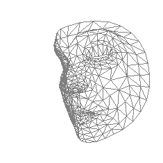

FaceArt
An alternative search engine for artwork databases

This project is a first approach to take the understanding of face expression in paintings a little further. The program renders a web interface where the user can select to take a screenshot from the webcam, or upload another input image. Once the input image has been captured, the program retrieves two main things. The first one, is the detected face mesh from the input image. The second one, is the top 3 similar paintings from an art database with its respective face meshes.
How it works
Artwork retrieval based on face expression
The sequentual steps followed by the program are very straight foward:
- Detect the face from the captured image and calculate its landmark points (face mesh). The landmark points now represent the feature vector that describes the expression.
- Calculate the similarity score between feature vectors with respect to all the images in the database.
- Select the top 3 higher scores and retrieve to the user the corresponding images and face meshes.